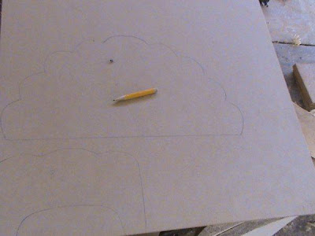
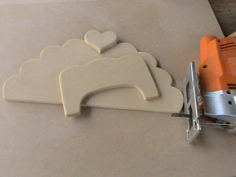
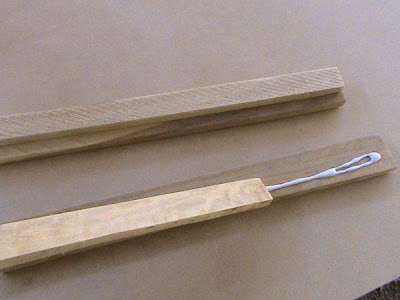
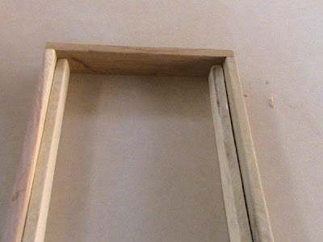
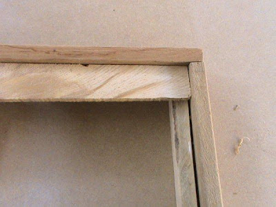
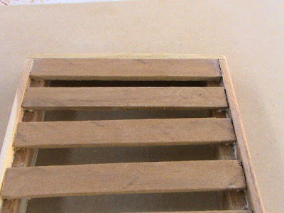
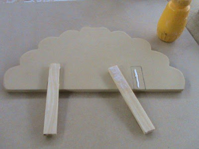
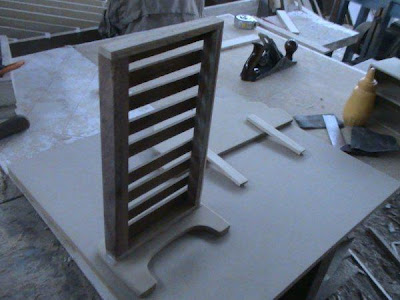
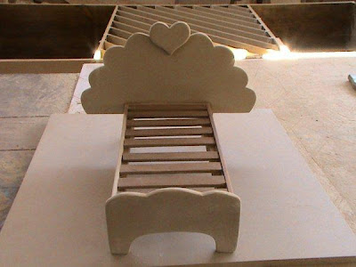

Procediminto
Lo primero que debemos hacer son las plantillas, de la cabecera como también de la piecera, esto lo
podemos hacer en un triplay, o también puede ser una cartulina, la plantilla nos servirá como la forma
que tendrá la cabecera como también la piecera, luego de hacer las plantillas pasamos estas al MDF, esto
lo veremos en la parte inferior.

Aquí tenemos los trazos, esto lo logre con la ayuda de las plantillas, las medidas de la piecera como
también de la cabecera las di en forma rectangular, solo sirvió de referencia, ya que después podemos
hacerla de la forma que queramos, en mi caso lo haré de la forma que ven en a imagen, que es algo
parecido a un coral.

En la imagen que tenemos a continuación la cabecera como también la piecera estas cortadas, esto lo
logre con la ayuda de la caladora manual, agregue un corazón en la parte superior de la cabecera, esto
porque en este trabajo le doy un toque de amor, el corazón es un símbolo de amor, es un símbolo de
entrega, es un símbolo de lucha, por ello escojo un corazón, para que cada vez que vea el corazón mi
enamorada, vea que mi corazón siempre esta a su lado, mi corazón es solo de ella.

El paso que haré a continuación, es el armado de los largueros, junto con los soportes, estos soportes
tendrán que sujetar a la parrilla de la camita, lo hago con madera, ya que esta es mas fuerte que el
MDF, la madera es un material muy bueno, sobre todo para hacer estructuras, el MDF es un material
prefabricado, con el termino mas fino, para superficies planas, en este caso lo uso en a piecera como
también en la cabecera, ya que son superficies planas, debemos de aplicar cola de carpintero en las
uniones de estos largueros con los soportes.

El paso que sigue es unir los largueros, estos están con los soportes ya colocados, los unimos con los
amarres pequeños de los largueros, de esta forma logramos lo que vendría a ser parte de la tarima, estos
los unimos con cola de carpintero, o como también se le conoce como cola sintética, el agarre de esta es
muy fuerte.

El paso que sigue es. el colocado de las parrillas, como lo vemos en las imágenes que tenemos aquí, la
cola de carpintero pegara muy bien estas uniones, entre los soportes y parrillas, esta también servirá
para que la tarima tenga mayor soporte, ya que ayudara en el agarre, unirá mas a los largueros largos,
con los amarres de largueros.

Pegamos las demás parrillas a los largueros, poco a poco, aplicamos cola de carpintero para que de este
modo quede pegada al larguero, la distancia la debemos de calcular, ya que son 9 unidades de parrilla,
podemos aumentar una si queremos, yo lo hice solo con 9 unidades

El paso que sigue es colocar las patas traseras de la cabecera, esto lo pegamos con cola de carpintero,
antes de pegar, debemos de sacar un trazo para que de este modo sepamos donde pegar, esto lo lograremos
con la cinta métrica o wincha.

El paso que haremos a continuación es el armado de la cama, empezamos con la piecera y los largueros, lo
hacemos con cuidado, la superficie donde armemos estos deberá ser plana, para que de este modo la unión
sea buena, de esta forma la cola pegara fuerte

Luego de que seque, hacemos los mismo con la cabecera, pegamos los largueros a la cabecera, con esto
terminamos nuestra camita de muñecas, ¿sencillo verdad? se los dije es un trabajo muy sencillo, el
corazón le da un toque de ternura a este trabajo.
Materiales.
Piecera de camita 1 Unidad - 19 x 12.30 Centimetros - Grosor 8 Lineas - MDF
Cabecera de camita 1 Unidad - 37 x 19 Centímetros - Grososr 8 Lineas - MDF
Largueros de camita 2 Unidades - 31 x 2 Centímetros - Grosor 8 Lineas - Madera.
Amarres de largueros 2 Unidades - 18 x 2 Centímetros Grosor 8 Lineas - Madera.
Soporte de largueros 2 Unidades - 31 x 1Centimetros - Grosor 8 Lineas - Madera.
Parrilla de la camita 9 Unidades - 16.30 x 1.30 Centímetros - Grosor 8 Lineas - Madera.
Patas traseras 2 Unidades 17 x 1 Centímetro - Grosor 8 Lineas - Madera.
Herramientas.
Caladora manual o serrucho.
Cola de carpintero.
Lápiz.
Cinta métrica o Wincha.